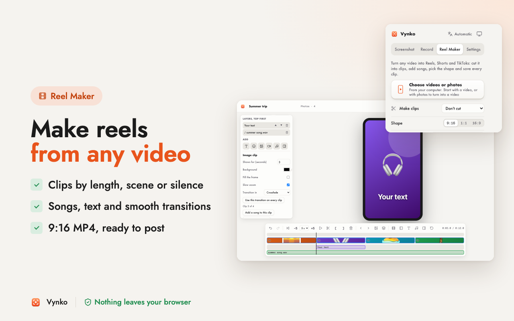

Chrome·Edge용 무료 화면 녹화 및 화면 캡처 도구
Vynko는 전체 페이지 스크린샷을 찍고, 소리, 마이크, 웹캠과 함께 화면을 녹화해요. 영상은 브라우저에서 바로 편집하세요: 실수한 부분을 잘라내고, 음악이나 로고를 넣고, 웹캠을 원하는 곳으로 옮길 수 있어요. 개인정보를 흐리게 가리고 스크린샷에 주석도 달 수 있어요. 무료이고 워터마크도 가입도 없으며, 네트워크 요청을 전혀 보내지 않아서 캡처한 내용은 절대 기기 밖으로 나가지 않아요.
Chrome에 추가하기 (무료) 사용 방법Windows, Mac, Linux, Chromebook의 Google Chrome, Microsoft Edge 및 기타 Chromium 브라우저에서 작동해요. 30개 언어로 이용할 수 있어요.
스크린샷
녹화

Vynko로 할 수 있는 일
- 전체 페이지 스크린샷페이지 전체를 스크롤하며 이어 붙여요. 나중에 로드되는 이미지나 Gmail, Slack처럼 내부 영역이 스크롤되는 앱도 문제없어요.
- 원하는 대로 스크린샷보이는 화면, 선택한 영역, 다른 창, 전체 화면까지. PNG, JPG, WebP로 저장해요.
- 화면 녹화탭, 탭의 일부, 원하는 창, 전체 화면을 720p, 1080p, 4K로 녹화해요.
- 소리, 마이크, 웹캠탭 소리, 실시간 레벨 표시가 있는 내 목소리, 원하는 모서리에 놓는 동그란 웹캠 말풍선을 함께 담아요.
- 영상 편집기녹화 영상의 원하는 부분을 프레임 단위까지 선택한 다음, 잘라내거나 음소거하거나 그 부분에만 음악이나 이미지를 넣어요.
- 웹캠은 별도 레이어녹화한 뒤에도 웹캠을 원하는 곳으로 옮기고, 크기를 바꾸고, 없앨 수 있어요.
- 레이어와 음악로고, 사진, 두 번째 영상을 위에 얹고, 배경 음악을 넣고, 무엇이든 되돌릴 수 있어요.
- 원본은 언제나 그대로아무리 많이 편집해도 원본 저장으로 손대지 않은 녹화 영상과 별도 파일의 웹캠을 받을 수 있어요.
- Reel Maker동영상이나 사진 몇 장으로 Reels, Shorts, TikToks를 만들어요. 클립, 노래, 텍스트, 전환 효과를 넣고 9:16 MP4로 저장해요.
- GIF 만들기바로 GIF로 녹화하거나, 예상 크기를 보면서 영상을 작게, 보통, 크게 GIF로 바꿔요.
- 주석화살표, 사각형, 원, 텍스트, 형광펜, 번호 단계, 스티커, 자르기.
- 개인정보 흐리게원하는 곳을 직접 흐리게 하거나, 페이지의 모든 이메일과 전화번호를 클릭 한 번으로 흐리게 해요.
- 타이머3초, 5초, 10초를 기다려 주니 캡처 전에 메뉴를 열어 둘 수 있어요.
- 내 마음대로 파일 이름페이지 제목, 사이트, 날짜와 시간으로 파일 이름을 정하고 원하는 폴더에 저장해요.
Vynko 사용 방법
Chrome에서 전체 페이지 스크린샷(스크롤 캡처) 찍는 방법
- Chrome Web Store에서 Vynko를 추가하고 툴바에 고정하세요.
- 페이지를 열고 Vynko 아이콘을 클릭해 전체 페이지를 고르거나 Alt+Shift+F를 누르세요.
- Vynko가 페이지를 스크롤하고, 고정 헤더가 반복되지 않게 숨긴 뒤 결과를 편집기에서 열어요. 다운로드나 복사를 클릭하세요.

Chrome에서 소리와 함께 화면 녹화하는 방법
- Vynko 아이콘을 클릭하고 녹화를 여세요.
- 지금 탭을 소리와 함께 녹화하려면 탭, 탭의 일부만 녹화하려면 영역, 원하는 창이나 전체 화면을 녹화하려면 선택을 고르세요.
- 목소리를 넣으려면 마이크를, 카메라 말풍선을 넣으려면 웹캠을 켜세요. 처음 놓일 모서리와 크기를 고를 수 있어요.
- 아이콘을 다시 클릭하고 중지를 누르세요. 영상이 편집기에서 열리고, 바로 편집해서 MP4나 WebM으로 다운로드할 수 있어요.
화면을 GIF로 녹화하는 방법
녹화에서 형식을 GIF로 정하고 평소처럼 녹화하세요. 또는 영상으로 녹화한 뒤 편집기에서 GIF를 클릭하고 작게(480 px), 보통(640 px), 크게(960 px) 중에서 고르세요. 저장하기 전에 크기마다 예상 파일 크기가 표시돼요.
화면 녹화 영상 자르고 편집하는 방법
- 클립이나 그 위의 얇은 눈금자를 드래그해서 구간을 선택하세요. 시작할 곳에서 [, 끝낼 곳에서 ]를 눌러도 돼요. ,와 .로 한 프레임씩 움직여요.
- 잘라내기로 지우고, 음소거로 소리를 끄거나, 여기에 음악 추가와 여기에 레이어 추가로 그 부분에만 노래, 로고, 두 번째 영상을 넣으세요.
- S를 누르면 클립이 둘로 나뉘고, 미리보기에서 레이어를 끌어 위치를 정할 수 있어요. 무엇이든 Ctrl+Z로 되돌릴 수 있어요.
- 다운로드를 클릭하세요. 편집하지 않은 녹화 영상이 필요하면 원본 저장이 언제나 있어요.

동영상이나 사진으로 Reels, Shorts, TikToks 만드는 방법
- Vynko 아이콘을 클릭하고 Reel Maker를 여세요. 클립 만들기에서 동영상 자르는 방식을, 비율에서 9:16 같은 비율을 고르고, 동영상을 어떻게 맞출지 정하세요.
- 동영상이나 사진 선택을 클릭하세요. 동영상 하나, 여러 개, 또는 사진만 고를 수 있어요. 사진만 있으면 한 장에 3초씩 동영상이 돼요.
- 레이어 상자의 아이콘으로 텍스트, 이모지, 이미지, 노래를 추가하세요. 각각 타임라인에서 드래그해서 언제, 얼마 동안 보일지 정하세요.
- 클립을 클릭해서 등장 방식을 고르세요: 크로스페이드, 검은 화면으로 페이드, 슬라이드, 확대.
- 다운로드를 클릭하면 릴 전체를 1080x1920 MP4로, 클립별로 저장을 클릭하면 클립마다 파일 하나씩 받을 수 있어요.

웹캠을 옮기거나, 크기를 바꾸거나, 없애는 방법
Vynko는 웹캠을 영상에 박아 넣지 않고 별도 레이어로 녹화해요. 편집기의 미리보기에서 동그란 웹캠을 클릭하세요. 끌어서 옮기고, 모서리를 끌어서 크게 또는 작게 바꾸고, 레이어 삭제를 클릭하면 없어져요. 저장하기 전에 편집을 끄거나 GIF로 녹화하면, 웹캠은 고른 모서리에 영상과 함께 그려져요.

다른 창이나 전체 화면을 캡처하는 방법
스크린샷에서 창을 고른 다음, 브라우저의 공유 창에서 캡처할 창이나 화면을 선택하세요. 이미지가 편집기에서 열려요.
스크린샷에서 이메일과 전화번호를 흐리게 가리는 방법
스크린샷을 찍으세요. 페이지에 이메일이나 전화번호가 있으면 편집기에 개인정보 흐리게가 나타나요. 한 번 클릭하면 모두 가려져요. 이름, 키, 카드 번호처럼 다른 부분도 흐리게 도구로 드래그해서 가릴 수 있어요.

단축키
| 동작 | Windows, Linux, ChromeOS | Mac |
|---|---|---|
| 보이는 화면 스크린샷 | Alt+Shift+V | Option+Shift+V |
| 전체 페이지 스크린샷 | Alt+Shift+F | Option+Shift+F |
| 선택한 영역 스크린샷 | Alt+Shift+A | Option+Shift+A |
| 탭 녹화 시작 또는 중지 | Alt+Shift+R | Option+Shift+R |
chrome://extensions/shortcuts에서 바꿀 수 있어요.
처음부터 개인정보를 지키도록 설계
저는 Vynko용 서버를 운영하지 않아요. 그래서 데이터가 갈 곳이 아예 없어요. 확장 프로그램에는 분석, 광고, 추적이 없고, 인터넷에서 코드를 불러오지도 않아요. 호스트 권한을 요청하지 않으며, 콘텐츠 보안 정책은 로컬 blob URL과 data URL 연결만 허용해요. 웹캠과 마이크는 내가 저장하는 녹화에만 들어가요.
Vynko는 네트워크 요청을 전혀 보내지 않아요. 스크린샷, 녹화, 편집이 모두 내 컴퓨터에서 이루어지고, 오프라인에서도 작동해요.
직접 확인해 보세요. Vynko 팝업을 마우스 오른쪽 버튼으로 클릭해 검사를 고르고, 네트워크 탭을 연 다음 스크린샷을 찍고 짧은 영상을 녹화해 보세요. 네트워크 탭은 비어 있어요.

개인정보처리방침 및 이용약관 전문을 읽어 보세요.
가이드
- 클릭 한 번으로 Chrome 탭 스크린샷현재 탭에 보이는 그대로 브라우저 상단 바 없이 캡처하고, 표시를 하고, 개인 정보를 흐리게 처리한 뒤 저장하거나 복사하세요.
- 어떤 웹사이트든 전체 페이지 스크린샷Vynko가 페이지를 대신 스크롤하고, 나중에 로드되는 이미지를 기다리고, 고정 헤더가 반복되지 않게 숨긴 다음, 전부 이어 붙여 긴 이미지 하나로 만듭니다.
- 어떤 창이나 앱이든 스크린샷웹페이지만 되는 게 아닙니다. 브라우저 자체의 공유 선택 창으로 다른 브라우저 창, 데스크톱 앱, 지금 보고 있지 않은 탭도 캡처할 수 있습니다.
- 전체 화면 스크린샷모니터에 보이는 모든 것(바탕화면, 모든 창, 작업 표시줄)을 캡처한 뒤 편집기에서 자르거나 메모를 넣으세요.
- 소리와 함께 화면 녹화탭은 탭 소리와 함께, 창이나 전체 화면은 시스템 오디오와 함께 녹화하고 마이크로 내 목소리도 넣을 수 있습니다. 실시간 레벨 막대로 소리가 들어오는지 바로 확인할 수 있어요.
- 웹캠과 함께 화면 녹화탭, 창, 화면 녹화에 동그란 웹캠 화면을 넣고, 편집기에서 옮기거나 크기를 바꾸거나 없앨 수 있습니다.
Vynko와 다른 도구 비교
| Vynko | 일반적인 무료 화면 녹화 프로그램 | |
|---|---|---|
| 가격 | 무료, 유료 요금제 없음 | 제한이 있는 무료 요금제 |
| 워터마크 | 없음 | 무료 요금제에서는 붙는 경우가 많음 |
| 계정 | 필요 없음 | 대개 필요함 |
| 파일 저장 위치 | 내 기기에만 | 업체 클라우드에 업로드되는 경우가 많음 |
| 시간 제한 | 없음 | 보통 5~15분 |
| 영상 편집 | 내장, 내 기기에서 | 온라인이거나 유료인 경우가 많음 |
| 네트워크 요청 | 없음 | 업로드, 분석, 계정 동기화 |
자주 묻는 질문
Vynko는 정말 무료이고 워터마크도 없나요?
네. 광고, 워터마크, 시간 제한, 유료 요금제가 없어요. 시간을 아껴 줬다면 원할 때 후원할 수 있는 링크가 있어요.
Vynko가 제 녹화 영상이나 스크린샷을 업로드하나요?
아니요. 캡처는 브라우저 안에서 만들어지고 내 기기에 저장돼요.
계정이 필요한가요?
아니요. 가입도 로그인도 없어요.
시스템 소리도 녹음되나요?
네. 녹화 탭에서 시스템 소리를 켜고, 창 또는 화면을 고른 다음 전체 화면을 선택하고 시스템 오디오 공유에 체크하세요. 그러면 WhatsApp이나 Zoom 통화처럼 다른 앱에서 나는 소리가 녹음돼요. Mac에서는 macOS 14.2 이상과 최신 Chrome이 필요해요. 창 하나에는 공유할 자체 소리가 없어서, Vynko가 대신 컴퓨터 소리를 추가하라고 제안해요. 탭 녹화에는 항상 탭 소리가 들어가요.
화면과 함께 웹캠도 녹화할 수 있나요?
네. 녹화 탭에서 웹캠을 켜고, 처음 놓일 모서리와 크기를 고르세요. 웹캠은 별도 레이어라서 편집기에서 원하는 곳으로 옮기고, 크기를 바꾸고, 없앨 수 있어요.
영상의 한 부분만 편집할 수 있나요?
네. 타임라인을 드래그해서 한 프레임 단위까지 구간을 선택하세요. 그다음 그 부분만 잘라내거나, 음소거하거나, 음악이나 이미지를 넣을 수 있어요.
편집한 뒤에도 원본 녹화 영상을 받을 수 있나요?
네. 편집기에는 언제나 원본 저장이 있어요. 녹화 영상을 처음 그대로 다운로드하고, 웹캠도 별도 파일로 받아요.
파일은 어디에 저장되나요?
Downloads 폴더나, 설정에서 지정한 그 안의 폴더에 저장돼요.
오프라인에서도 작동하나요?
네. 필요한 모든 것이 확장 프로그램 안에 들어 있어요.
Microsoft Edge에서도 작동하나요?
네. Vynko는 Chrome, Edge 및 기타 Chromium 브라우저에서 작동해요.
버그를 알리거나 기능을 요청하려면 어떻게 하나요?
mishravinay112@gmail.com으로 이메일을 보내 주세요.